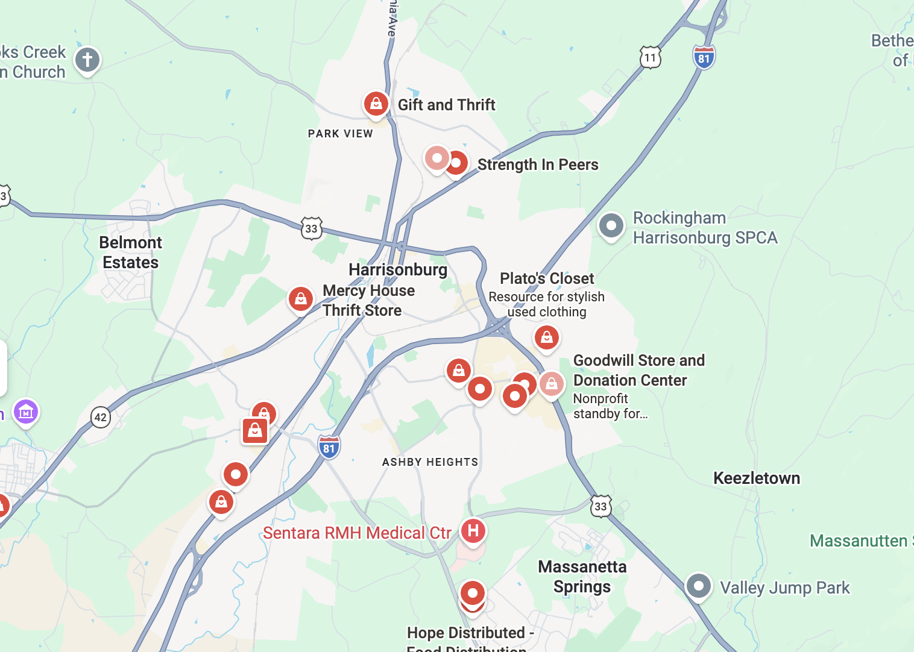
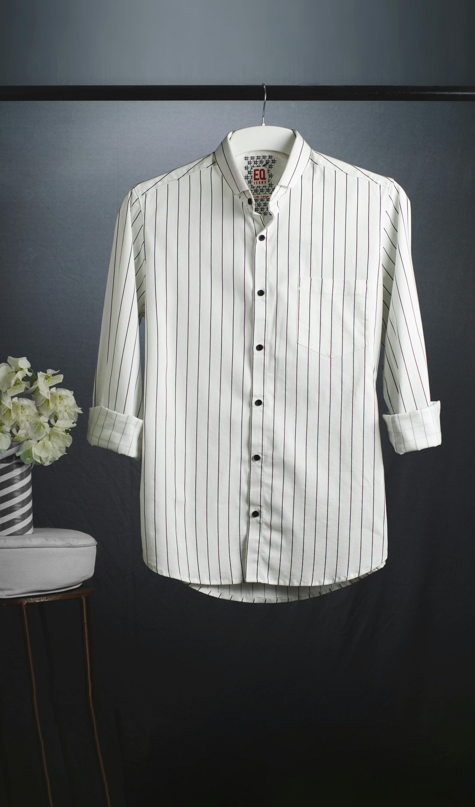
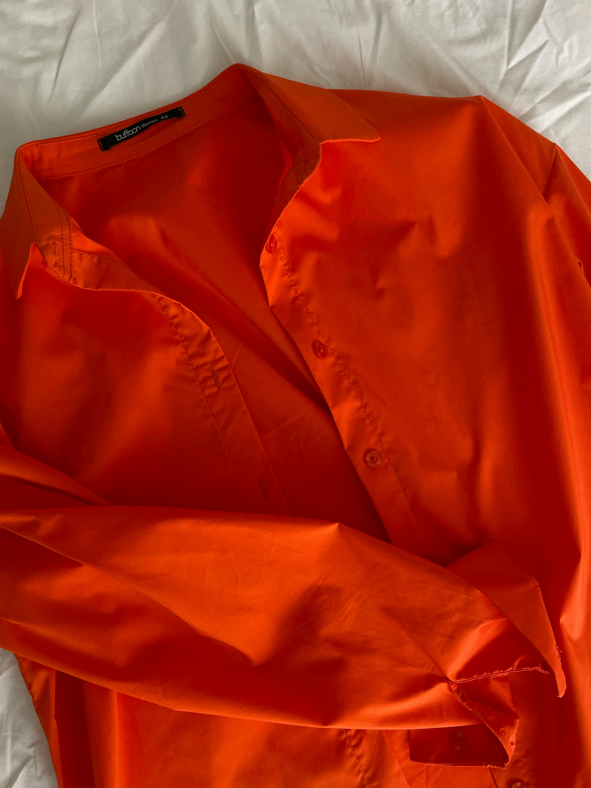

Contact Us
Contact and follow us on every platform!

Email us: @Campuskindfishe5em@dules.jmu.edu
College life is hectic, giving shouldn't be. Find your next donation spot near your college campus.
Your closet is full, your schedule is packed, and donating clothes keeps getting pushed to later. What should be a simple act of giving back often turns into a overwhelming task. Between sorting through clothes, keeping track of what to donate, and figuring out where and when to go, donating can quickly become frustrating.
CampusKind will change your donation process. With CampusKind, you can find nearby donation centers, operating hours, directions, ratings, and direct links to their websites. CampusKind also helps you organize your ready to donate clothing by uploading and storing photos of clothing you’re ready to donate, all in one place.
Type in your ZIP code to see a map of donation centers in your area. Browse nearby locations and choose the one that works best for you.

Easily revisit and organize your donation pile virtually! Upload pictures of your ready to donate clothes and save them here.


Save your go-to donation spots here. Quickly revisit the spots you trust most when it’s time to donate. You will be able to save places like Salvation Army and Goodwill.
Keep track of donation centers you’ve recently visited, making it easy to revisit locations and continue where you left off.
Contact and follow us on every platform!